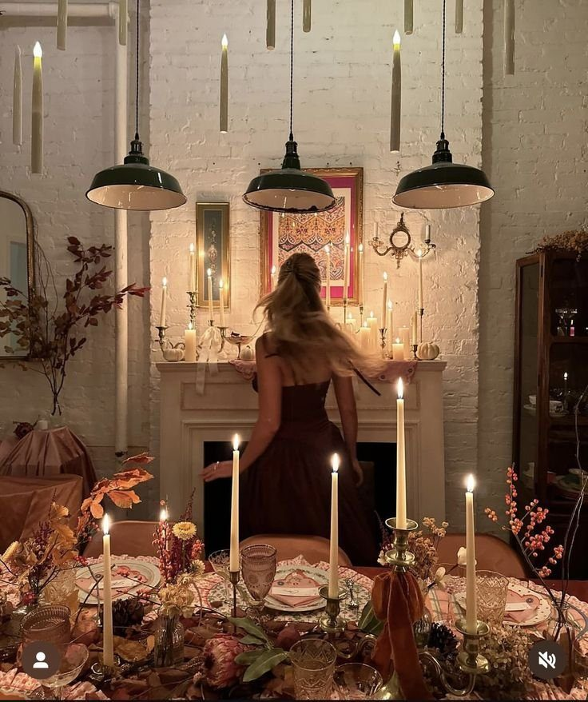
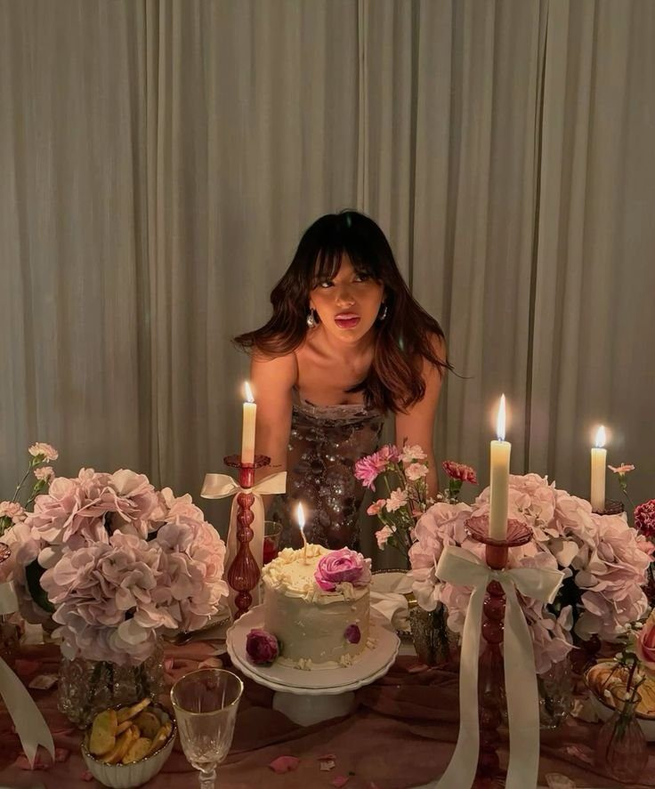
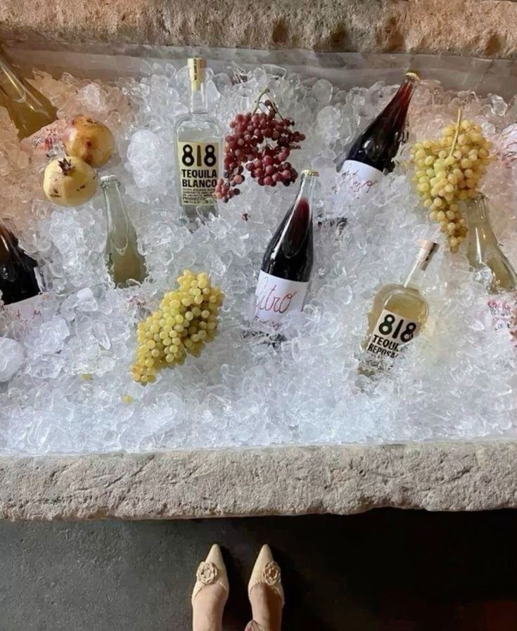
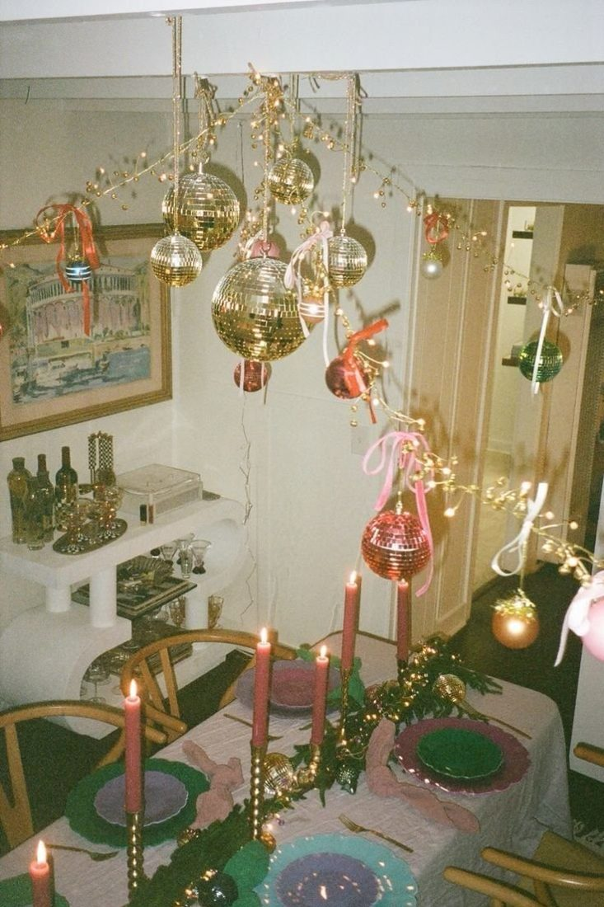
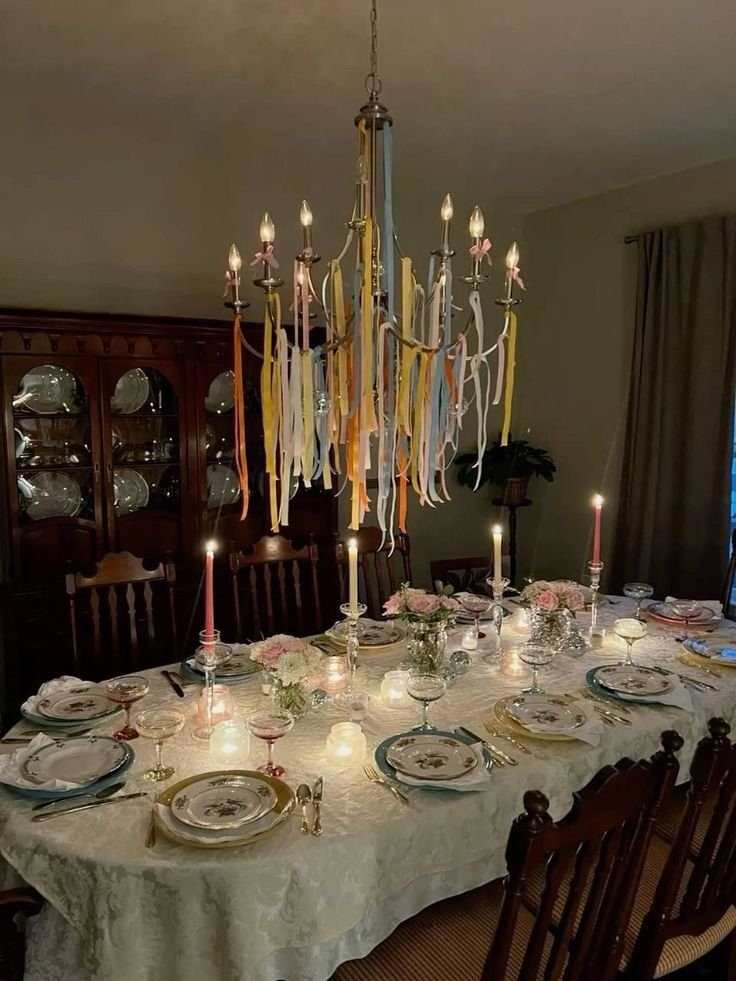
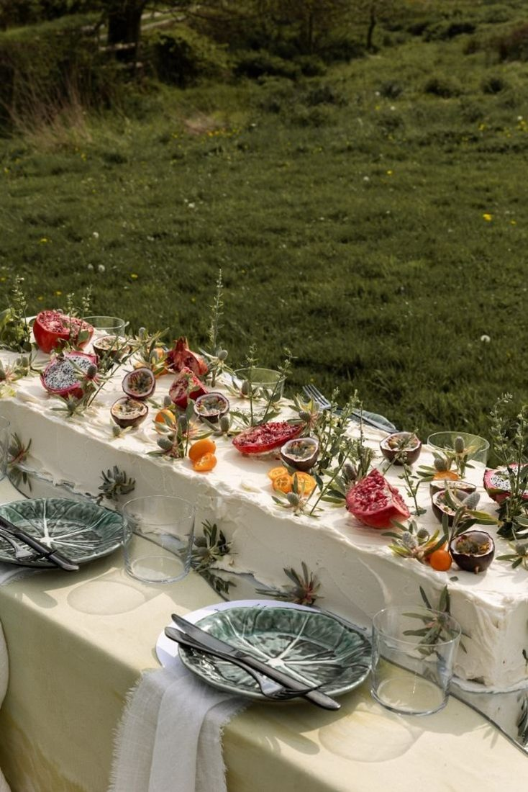
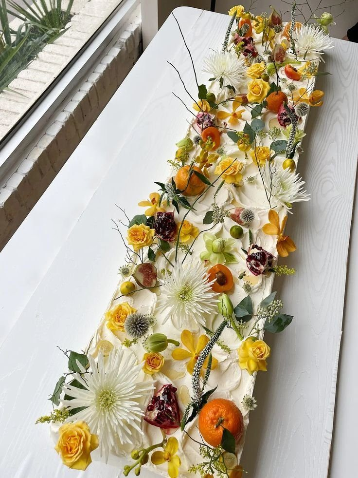
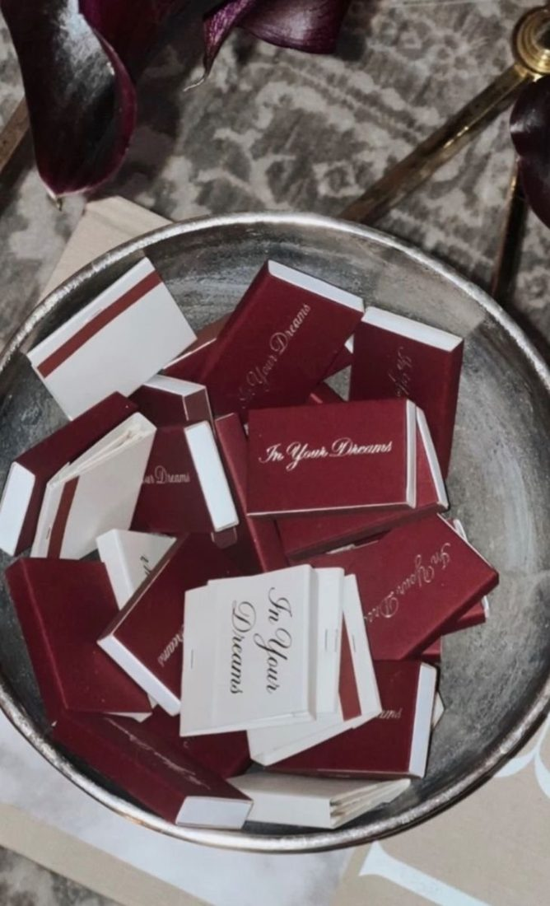
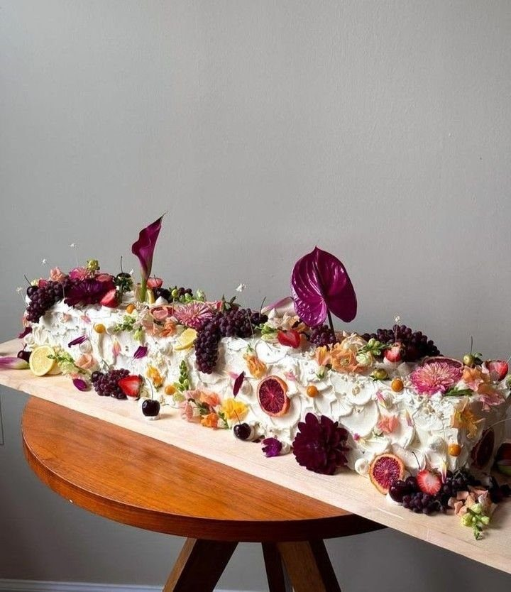

25th Birthday Dinner Inspirations
1 Apr 2025 · Written by Chompak Koonnawarote
ft. quarter life crisis
I’m turning 25 this April and needless to say I am anxious! Is this the age where we all start questioning our very existence on this earth? Hate to admit it but I’ve never felt more lost than I have now- adulthood, career trajectories, relationships and resposibilities are seeming a little bit overwhelming. How do people do this? Do they just run marathons and call it a year?
With all these questions in mind, I’ve decided to make the most out of what is in my control- who I surround myself with, the tasks I have at hand and doing what I love. The things I love will never change. Nutrition, pilates, americanos and dinners of course. If there’s one thing that will get me excited for this quarter life crisis, it’s imagining the perfecr get-together with friends to celebrate not only my birthday, but our successes and appreciation for one another.









Happy soon birthday Dee Dee (your collagen production might slow down but you sure ain’t).